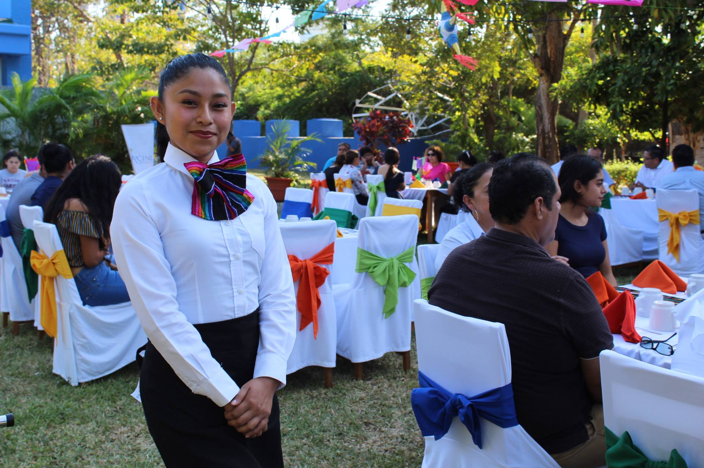

Estudia en uno de los destinos de la hospitalidad con mayor auge en mexico.
Cancun cuenta con excelentes instalaciones para que perfecciones tus habilidades de administración de empresas de la hospitalidad. En un pacífico pueblo rodeado de la impactante campiña suiza, los estudiantes pueden disfrutar de una variedad de actividades apasionantes al aire libre, desde esquí y rafting hasta senderismo y equitación.
La Universidad Tecnologica de Cancun.
Ubicada sobre Carretera Cancún-Aeropuerto y con vista a la bella selva, la universidad tecnologica de cancun ofrece un entorno educativo de primera.